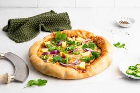

BBQ Chicken Pizza
Hard
A popular, non-traditional pizza style featuring a tangy or sweet barbecue sauce base instead of tomato sauce, topped with shredded cooked chicken, mozzarella cheese, and sliced red onions.

Ingredients
- Dough
- Sauce
- Chicken
- Toppings
- Cheese
Instructions:
Chicken Prep: Use 1 cup of shredded rotisserie or pan-seared chicken, tossed in BBQ sauce before topping to prevent it from drying out.
The Base: Use 1/2 cup of your favorite BBQ sauce, or mix it with a little tomato purée.
Toppings: Top with red onion, mozzarella, and smoked gouda for extra flavor.
Baking: Bake at high heat (425°F+) for 15-20 minutes on a preheated pan or stone for a crispy crust.
Finishing: Garnish with fresh cilantro and a drizzle of ranch or hot honey after baking.